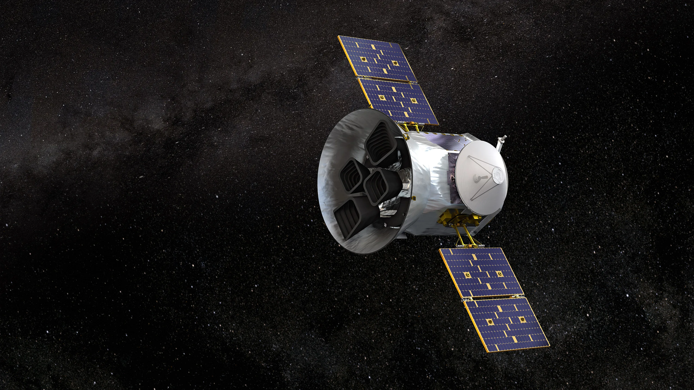
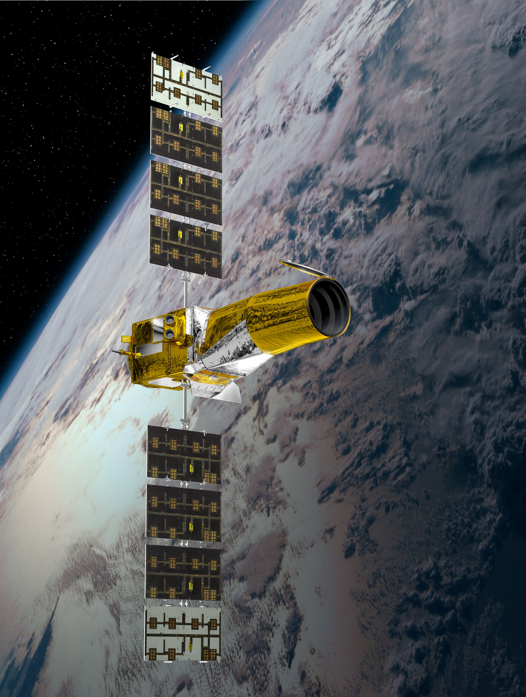

What is Exoplanet?
An exoplanet, or extrasolar planet, is a planet that orbits a star other than the Sun. These planets are located outside our Solar System and revolve around their respective stars, just as Earth orbits the Sun. Exoplanets can vary widely in size, composition, and distance from their host stars, making them a diverse and intriguing field of study in astronomy.
Why is it essential to learn about Exoplanets
Studying exoplanets is crucial for understanding the potential for life beyond Earth. By exploring the variety of planets that exist in other star systems, scientists can identify those that might have conditions suitable for life. This includes examining their size, composition, and distance from their host stars to determine if they lie within the "habitable zone," where liquid water could exist. Learning about these factors helps us assess the likelihood of finding extraterrestrial life and informs our search for planets that might host life.
Understanding exoplanets also provides valuable insights into planetary formation and evolution. By comparing exoplanets with those in our own Solar System, researchers can gain a better grasp of how planets form, migrate, and change over time. This knowledge helps refine our models of planetary system development and improves our understanding of the processes that shaped our own Solar System. Moreover, studying a diverse range of planetary systems can reveal the variety of planetary configurations and the factors that influence their evolution.
Additionally, exoplanet research drives technological innovation and enhances our observational capabilities. The techniques developed to detect and study exoplanets, such as the transit method and radial velocity measurements, have broad applications in other areas of astronomy and space exploration. Advances in telescope technology and data analysis techniques enable us to gather more precise information about distant worlds, pushing the boundaries of what we can observe and learn about the universe. This ongoing progress contributes to the overall advancement of space science and technology.
Characteristics of Exoplanets
Exoplanets come in a broad range of sizes, from smaller than Earth to several times larger. They are classified based on their composition, which can be rocky like Earth or gaseous like Jupiter. Some exoplanets are similar to the gas giants in our Solar System, while others are found to be more akin to Neptune or even Earth-sized with rocky surfaces.
Exoplanets have diverse orbital characteristics. They can orbit their host stars at varying distances, from very close orbits, known as "hot Jupiters," to more distant, Earth-like orbits within the habitable zone where conditions might be suitable for liquid water. Their orbits can be circular or highly elliptical, and they may have different orbital periods ranging from a few days to several years.
The atmospheres of exoplanets can vary significantly. Some may have thick, dense atmospheres composed of hydrogen and helium, while others might have atmospheres with more complex compositions, including potential signs of water vapor or even exotic gases. Studying these atmospheres helps scientists understand the potential for habitability and the weather patterns on these distant worlds.
Exoplanets experience a wide range of temperatures depending on their distance from their host star and the star’s characteristics. Planets in the habitable zone of their stars have temperatures that could allow for liquid water, while those closer to their stars might be extremely hot, and those farther out could be icy. The climate of an exoplanet is influenced by its atmosphere, orbital distance, and stellar radiation.
Identifying exoplanets within the habitable zone of their host stars is a key goal in the search for life. These are regions where conditions might allow for liquid water to exist on the planet's surface. Factors such as the planet's size, atmosphere, and distance from its star contribute to its potential habitability, and scientists use various methods to assess these possibilities.
Examples of Exoplanets
WASP-12b
This exoplanet, located about 1,400 light-years away in the constellation Aries, is one of the largest known. WASP-12b is classified as a "hot Jupiter," and its size is estimated to be about 1.8 times that of Jupiter. Its close proximity to its host star results in extremely high temperatures and an expanded, bloated atmosphere.
HAT-P-67b
This exoplanet is a gas giant located approximately 700 light-years away in the constellation Leo. HAT-P-67b is roughly 1.8 times the size of Jupiter. It is part of a group of large, low-density exoplanets that exhibit significant atmospheric expansion due to their proximity to their stars.
HD 100546 b
Situated about 320 light-years from Earth in the constellation Scorpius, HD 100546 b is another enormous exoplanet with a size approximately 1.9 times that of Jupiter. It is classified as a hot Jupiter and experiences extreme temperatures due to its close orbit around its host star.
TrES-4b
TrES-4b, found about 1,400 light-years away in the constellation Hercules, is one of the largest exoplanets known. It has a radius approximately 1.7 times that of Jupiter. This gas giant is noted for its low density and large size, characteristics attributed to its intense heating from its nearby star.
Explorations and Missions
Kepler Space Telescope (2009-2018)
The Kepler Space Telescope, launched by NASA, was a groundbreaking mission dedicated to discovering exoplanets using the transit method. By monitoring the brightness of over 150,000 stars, Kepler identified thousands of exoplanet candidates and confirmed over 2,600 exoplanets. This mission provided a wealth of information on the frequency of Earth-sized planets in the habitable zones of their stars and greatly expanded our knowledge of planetary systems.

Hubble Space Telescope (1990-Present)
Although not exclusively focused on exoplanets, the Hubble Space Telescope has made significant contributions to the study of exoplanets. Hubble has been used to analyze the atmospheres of several exoplanets, including detecting the presence of water vapor and other compounds. Its observations have provided critical data on the physical properties and atmospheric composition of exoplanets.

TESS (Transiting Exoplanet Survey Satellite) (2018-Present)
TESS is a NASA mission designed to survey the entire sky for exoplanets using the transit method. By focusing on nearby stars, TESS aims to find new exoplanets around bright stars that are ideal for follow-up observations. TESS has already discovered a number of new exoplanets and is helping to identify potential candidates for more detailed study by other telescopes.
COROT (2006-2014)
The COROT mission, operated by the French space agency CNES, was one of the first missions dedicated to exoplanet discovery using the transit method. COROT's observations led to the discovery of several exoplanets and provided valuable data on the sizes and densities of these distant worlds. The mission significantly contributed to our understanding of exoplanet characteristics and their potential habitability.
Facts about Exoplanets
Some exoplanets experience weather phenomena far beyond what we find on Earth. For instance, exoplanets like HD 189733b exhibit extreme atmospheric conditions, including winds reaching up to 8,700 kilometers per hour (5,400 miles per hour) and temperatures hot enough to vaporize metal. These extreme conditions are influenced by the planet's proximity to its star and its atmospheric composition.
Not all exoplanets are bound to stars. Some exoplanets, known as rogue or interstellar planets, drift through space without orbiting any star. These planets may have been ejected from their original star systems due to gravitational interactions. Rogue planets can provide insights into the processes that occur during planetary formation and migration.
The majority of exoplanets discovered so far are gas giants or "mini-Neptunes," which are smaller than Neptune but larger than Earth. These types of exoplanets often have thick atmospheres and may not have solid surfaces, making them very different from Earth-like planets. This highlights the diversity of planetary systems and the variety of planetary environments.
Just as Saturn has its iconic rings, some exoplanets may also have ring systems. Observations of some exoplanets have suggested the presence of rings, although direct imaging is challenging. The discovery of exoplanetary rings would provide new insights into planetary formation and the dynamics of ring systems.
In some star systems, exoplanets orbit more than one star. These so-called circumbinary planets orbit two stars, much like Tatooine in Star Wars. The dynamics of such planetary systems are complex and can lead to unique environmental conditions. Studying these systems helps scientists understand how planets can form and survive in such environments.
Quiz
1. How did the Hubble Deep Field observation in 1995 change our understanding of the universe?
2. Describe one contribution of ancient Babylonians to early astronomy.
3. Explain the impact of the Islamic Golden Age on the development of astronomy during the medieval period.
4. How did the heliocentric model proposed by Copernicus revolutionize our understanding of the solar system?
5. What are some of the key research areas in contemporary astronomy, and why are they significant?